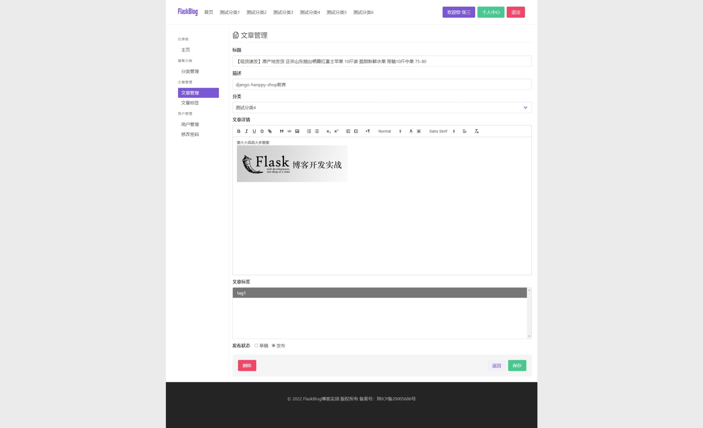

富文本编辑器Quill
为什么需要集成富文本编辑器？
一个博客最主要的功能是什么，那就是写作，如果不能对我们发布的内容进行排版美化，那么我们所发布的内容又有什么意义? 对于阅读者来说也是非常的不友好和不尊重，一篇排版精良的文章往往会让人赏心悦目，也会让读者爱上你的博客，所以富文本编辑器的使用就显得非常重要！
为什么选择富文本编辑器Quill?
大家可能会有疑问，市面上那么多富文本编辑器为什么选择他，首先是Quill富文本编辑器是一款开源的编辑器，它在 GitHub 上的 star 数名列前茅。体验下来，它的优势是轻量、兼容性强、支持的插件扩展丰富，需要用到什么额外功能时再去单独引入就好了。
此外，它还有适用于 Vue 和 React 的封装版本，无论你习惯用哪个前端框架，都能无差异地使用它。
集成Quill
集成Quill的思路是在新增文章时显示空白的富文本编辑器，并将编辑器的内容同步赋值给表单，在编辑文章时则必须回显内容到富文本编辑器并同步修改表单内容！
在app/admin/templates/admin/article_form.html中新增表单元素
引入富文本编辑器的样式css以及用来异步提交的axios.js
{% block extra_head_style %}
<link href="https://cdn.quilljs.com/1.3.6/quill.snow.css" rel="stylesheet">
<script src="https://unpkg.com/axios/dist/axios.min.js"></script>
{% endblock extra_head_style %}
新增一个富文本容器id为editor的div
<div class="field">
{{ form.content.label(class='label') }}
<div class="control">
{{ form.content(class='textarea', rows="10", placeholder='文章详情') }}
</div>
<!-- 富文本编辑器 -->
<div id="editor" style="height: 500px;">
</div>
</div>
在本模板中的地步引入Quill的js文件
{% block extra_foot_script %}
<!-- Include the Quill library -->
<script src="https://cdn.quilljs.com/1.3.6/quill.js"></script>
{% endblock extra_foot_script %}
配置quill富文本编辑器
{% block vue_script %}
<script>
var toolbarOptions = [
['bold', 'italic', 'underline', 'strike', 'link'], // toggled buttons
['blockquote', 'code-block', 'image'],
// [{ 'header': 1 }, { 'header': 2 }], // custom button values
[{ 'list': 'ordered'}, { 'list': 'bullet' }],
[{ 'script': 'sub'}, { 'script': 'super' }], // superscript/subscript
[{ 'indent': '-1'}, { 'indent': '+1' }], // outdent/indent
[{ 'direction': 'rtl' }], // text direction
// [{ 'size': ['small', false, 'large', 'huge'] }], // custom dropdown
[{ 'header': [1, 2, 3, 4, 5, 6, false] }],
[{ 'color': [] }, { 'background': [] }], // dropdown with defaults from theme
[{ 'font': [] }],
[{ 'align': [] }],
['clean'] // remove formatting button
];
var quill = new Quill('#editor', {
// debug: 'info',
modules: {
toolbar: toolbarOptions
},
theme: 'snow',
placeholder: 'Compose an epic...',
readOnly: false,
formats: {}
});
var html = quill.container.firstChild.innerHTML;
var content = document.querySelector("textarea[name='content']");
// 隐藏表单
content.setAttribute('style', 'display:none')
// 监听富文本并同步到表单
quill.on('text-change', function (delta, oldDelta, source) {
content.innerHTML = quill.container.firstChild.innerHTML;
});
// 回显内容
quill.pasteHTML(content.value)
// 上传图片方法
var showImageUI = function(){
var fileInput = this.container.querySelector('input.ql-image[type=file]');
if (fileInput == null) {
// 通过js方式构造一个上传表单
fileInput = document.createElement('input');
fileInput.setAttribute('type', 'file');
fileInput.setAttribute('accept', 'image/png, image/gif, image/jpeg, image/bmp, image/x-icon');
fileInput.classList.add('ql-image');
// 监听change事件
fileInput.addEventListener('change', function () {
if (fileInput.files != null && fileInput.files[0] != null) {
const formData = new FormData();
formData.append('upload', fileInput.files[0]);
axios({
url:'{{ url_for("admin.upload") }}',
method:'post',
data:formData,
headers:{'content-type': 'multipart/form-data'},
}).then(res => {
// 返回错误提示
if (res.data.code == 'err'){
alert(res.data.message)
return
}
// 设置图片回显到富文本编辑器
var range = quill.getSelection(true);
quill.insertEmbed(range.index, 'image', res.data.url);
quill.setSelection(range.index + 1);
}).catch(err => {
console.log(err)
})
}
});
this.container.appendChild(fileInput);
}
fileInput.click();
}
// 上传图片
var toolbar = quill.getModule('toolbar');
toolbar.addHandler('image', showImageUI);
</script>
{% endblock vue_script %}
本段代码不会过多的去解释，相关内容可参考Quill的文档！
toolbarOptions变量为配置富文本编辑器的菜单项！
quill变量是初始化了一个富文本编辑器的对象
下边这段代码则是获取富文本的输入值及表单，监听富文本编辑器的text-change事件，并同步赋值给表单！
之后再将表单值回显到富文本编辑器，这个主要用来在编辑文章时回显内容！
var html = quill.container.firstChild.innerHTML;
var content = document.querySelector("textarea[name='content']");
// 隐藏表单
content.setAttribute('style', 'display:none')
// 监听富文本并同步到表单
quill.on('text-change', function (delta, oldDelta, source) {
content.innerHTML = quill.container.firstChild.innerHTML;
});
// 回显内容
quill.pasteHTML(content.value)
上传图片配置
// 上传图片
var toolbar = quill.getModule('toolbar');
toolbar.addHandler('image', showImageUI);
这是向上传图片表单自定义一个上传方法showImageUI，这个方法则是上传图片的全部前端内容，当然还必须实现一个上传表单的后端接口，也就是axios中通过post提交的那个接口url！
实现后端图片上传接口
路径：app/admin/views.py
@bp.route('/upload', methods=['POST'])
@login_required
def upload():
# 上传图片
if request.method == 'POST':
f = request.files.get('upload')
file_size = len(f.read())
f.seek(0) # reset cursor position to beginning of file
if file_size > 2048000: # 限制上传大小为2M
return {
'code':'err',
'message': '文件超过限制2048000字节',
}
upload_path, filename = upload_file_path('upload', f)
f.save(upload_path)
return {
'code':'ok',
'url':f'/admin/static/upload/{filename}'
}
这段代码后端接口最主要的上传方法及验证方法我们在上传用户头像的章节已经讲过，这里我们只是复用了哪里的方法！
至此，我们的富文本编辑器就集成成功了！
- 最终效果

最后，我们在调用富文本编辑器的内容时必须使用safe过滤器将富文本内容渲染{{ post.content|safe }}！